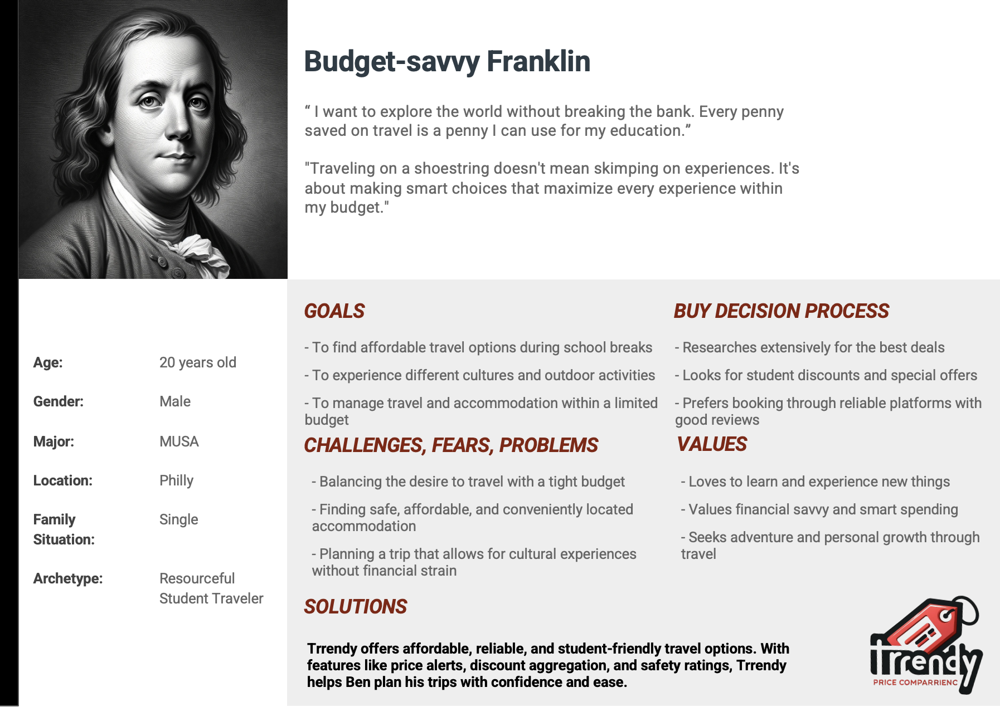

Trrendy Introduction

Airbnb, a revolutionary platform in the hospitality industry, was founded by Brian Chesky, Joe Gebbia, and Nathan Blecharczyk in 2008. It has redefined the way people travel by allowing homeowners to rent out their spaces to travelers, providing a unique and personalized lodging experience. Airbnb’s service extends beyond just providing accommodation; it offers a gateway for people to explore new locations with a local’s perspective.
Despite its success, Airbnb faces certain challenges that impact both hosts and users. Many hosts struggle with understanding detailed feedback from guests. While they receive reviews, these often lack depth in terms of common themes or specific indicators that could guide service improvement.On the other side, users face a lack of transparency in pricing. While they can see the current price set by hosts, they have no reference point to understand if this price is reasonable based on historical data and market trends.
This project aims to address these challenges by leveraging the power of data analysis. By analyzing historical Airbnb records, this project will uncover both tabular and spatial distributions of Airbnb activities. This insight will empower hosts with a deeper understanding of how their service is being utilized and guide their business strategies for future expansion.A key component of this project is to develop a predictive pricing model. This will offer users a reference price, helping them make more informed decisions when choosing accommodations. The model will consider various factors, including historical pricing trends, to provide a realistic price estimate.
In this project, we delve into the world of Airbnb in San Francisco, using comprehensive datasets from two key sources: InsideAirbnb and San Francisco Open Data. These datasets provide a rich foundation for the analysis, offering in-depth insights into the local Airbnb market. The project is structured into Three main parts, each focusing on a different aspect of Airbnb’s presence in San Francisco.
Explore distribution of Airbnb data in San Francisco: The first part is dedicated to exploring the distribution of Airbnb listings across the city. This involves examining various factors such as geographical spread, type of listings, and occupancy trends, offering a detailed overview of the Airbnb landscape in San Francisco.
Predict Airbnb Price in San Francisco: The second part of the project is centered around predicting Airbnb prices in the city. By employing advanced data analysis and predictive modeling techniques, we aim to provide both hosts and guests with valuable insights into pricing trends. This not only helps guests in making informed booking decisions but also assists hosts in setting competitive and fair prices for their listings. Together, these parts form a comprehensive study, aiming to enhance the understanding of the Airbnb market in San Francisco and contribute to a more informed and efficient marketplace.
Future UI design: The final and equally crucial part of the project revolves around future user interface (UI) design. We plan to develop a user-friendly and intuitive tool that simplifies access to our findings and insights. This tool will not only visually represent data distributions and price predictions but will also be designed with the end-user in mind, ensuring ease of navigation and interaction.